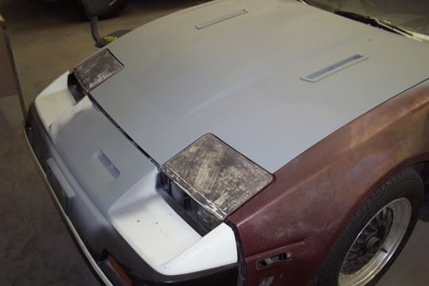

-
What vents are those? I do have an idea, I *think* it could look good and be very functional.
Put two vents like those on each side, toward the front, close to the front two cylinders/turbo.
In the middle, toward the back, put something like a mustang scoop/wrx sti scoop there.
Opinions? -
I'll see if I can get some more pics of the vent up this weekend. The spoilers still on the car, still needs a small amount of work to finish it. Don't know if I'll ever get to making a mold of it or not, won't be anytime in the near future though.
"Beer is proof that god wants us to be happy" - Benjamin Franklin -
1artworkz wrote:
Nice!Selling left over z31 parts from an 85. -
They are indeed nice…
Too bad they are like $250 -
I cant express how much I love this car. Was my background on my work PC till they took it away… those bastards86na - BlueZ
Shiro #366 - Kouki Monster
85t - Mr Tickles -
Just have a question; after lookign through these guys.
Can you run a hood without a vent/scoop on an 85 turbo? Im sure you can since the 86s didnt have a scoop and ran the same setup… I cant seem to find a scoop/cowl/vent I *really* like that arent going to cost a fortune. I was thinking about just living the hood plain for now, see how I like that.
(Personally, I like the plain look; but I want to make sure its not gonna get too hot or anything). -
Making a cowl is easy IF YOU HAVE ACCESS TO A WELDER AND KNOW HOW TO USE IT! This has been the main problem in my STILL incomplete cowl project. Sorry, I'm just saying this because I saw my name was mentioned; didn't read through the thread. I recommend going with vents of some sort. Easier to do; just cut the right size hole and fit it in/seal it."When you approach the world with the apron of a servant, you're allowed to go places you can't if you approach it with the crown of a king."~Jon Foreman
86 NA2T. Remanufactured NA engine. T3, intercooled, 13 lb boost. 3" turbo back CM exhaust w/cat, DXD Stage II clutch, blow-through w/ BOV, E-fans, short shifter. -
screamingflea wrote: Making a cowl is easy IF YOU HAVE ACCESS TO A WELDER AND KNOW HOW TO USE IT! snip …
This is a cowl.
http://www.theautoglossary.com/search_r … earch.y=12
This is a cowl induction hood.
http://www.wisegeek.com/what-is-a-cowl-hood.htm -
Hood Scoop
A raised area on a hood with a front- or rear-facing opening. Many hoods are 0manufactured with a built-in scoop, but a scoop also can be added to a smooth hood. Scoops often are made from steel, fiberglass or carbon fiber. Some hood scoops are purely for show and only look like they have an opening. Others have a front-facing opening to feed the motor cooler air from outside the engine compartment, which improves performance because cool air is denser than warm air. Still other scoops feature a rear-facing opening to vent hot underhood air; this style often is referred to as a cowl induction hood.85 Z31 6.0 LSX turbo 766whp/792wtq
04 GTO, LS6, big cam, porting, N20… underway for summertime daily driver. -
HEY! Guess what? The guys at Nissan are a HELL of a lot smarter than the guys at autospeed. Unless you have access to a wind tunnel, then good luck ACCURATELY testing how well the hood scoop is performing. The little yarn trick is fine and the pressure drop is fun, but if you're going to try and design a car that way, all the power to you.

1988 300zxt. gt35, stance, etc. Wheels: Varrstoen ES2 18x9.5 et-13 225/40. 18x10.5 et0 245/40
1990 jetta vr6'd -
guess what? it was made back in the 80's it's a mid 80's piece of shit, back when wind tunnels were JUST coming into the scene. the wind tunnels now are A LOT more efficient then back then.DeleriousZ wrote: HEY! Guess what? The guys at Nissan are a HELL of a lot smarter than the guys at autospeed. Unless you have access to a wind tunnel, then good luck ACCURATELY testing how well the hood scoop is performing. The little yarn trick is fine and the pressure drop is fun, but if you're going to try and design a car that way, all the power to you.
the engineers today are a lot better then the engineers then.
he gives me shit all the time about the money i spend on my car but he simply doenst understand what type of "high" you get from watching a stock car transform into something alive with as much emotion and feelings as any human.Originally posted by PurePontiacKid -
Auto manufacturers are more concerned with making pretty cars than aerodynamic cars. You'd think that modern sports cars would be more aerodynamic than an FD RX-7, well guess what? They aren't. The FD RX-7 is pretty much the most aerodynamic car that isn't a Prius or Insight (aka things that aren't high performance at all). -
Every time I click "View New Posts" and see that New2Z posted last (or at all), I want to cry. And then break shit.
I've seen wind tunnel data for similar scoops before, and I see no reason to doubt that the scoop is functional. Maybe not necessary on the water cooled T3 cars (everything but 84), but functional. I can't believe that some people don't believe that something like the stock scoop is capable of letting air getting forced into the engine bay.
So maverickxeo, you shouldn't have any issues running the 86 hood without a scoop as the 85's T5 is water-cooled. But If I had to suggest a scoop; I'd suggest the proudear style, or rip off Butter's shit like everyone else wants to. :lol:Feedback- viewtopic.php?f=18&t=19840

-
Thats pretty much what I wanted to hear haha.floridaZ wrote: Every time I click "View New Posts" and see that New2Z posted last (or at all), I want to cry. And then break shit.
I've seen wind tunnel data for similar scoops before, and I see no reason to doubt that the scoop is functional. Maybe not necessary on the water cooled T3 cars (everything but 84), but functional. I can't believe that some people don't believe that something like the stock scoop is capable of letting air getting forced into the engine bay.
So maverickxeo, you shouldn't have any issues running the 86 hood without a scoop as the 85's T5 is water-cooled. But If I had to suggest a scoop; I'd suggest the proudear style, or rip off Butter's shit like everyone else wants to. :lol:
I would like to do a hood like Butter's, but seeing as I have to be off work for a while (possible concussion) I really cant afford much more than the used hood I have. -

Those are '87 Pontiac Trans Am GTA hood vents, if anyone was wondering. And New 2 Z, they do function correctly on the Trans Am, with the thermo fan on and the car stopped, you can feel air coming out of them. The pressure drop test on Autospeed may not show results on these hood vents, because they are not designed to flow air using air pressure differential, they're just pretty looking holes in the bonnet.
Have you done the pressure differential test on a factory z31 hood scoop? I'd love to see the carefully documented results you got.

Copyright © 2006–. All rights reserved. Privacy Policy